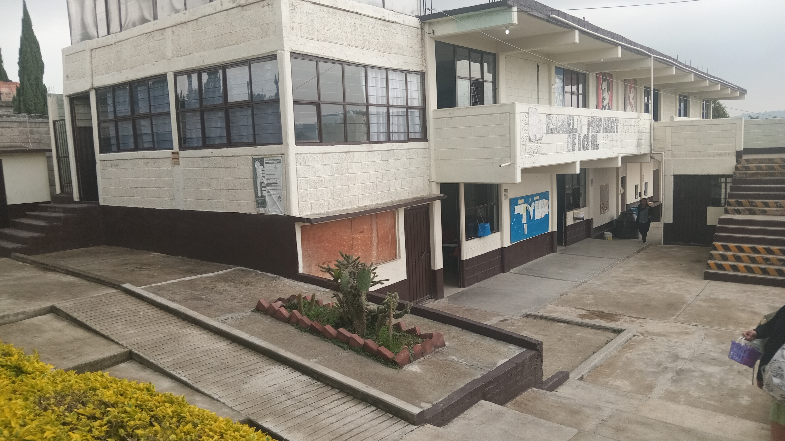
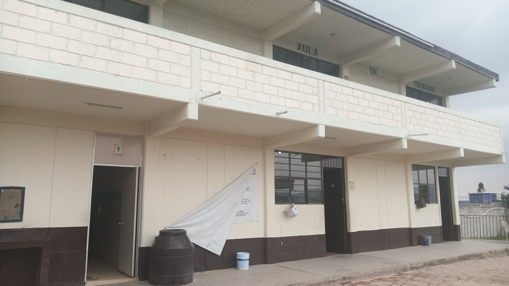
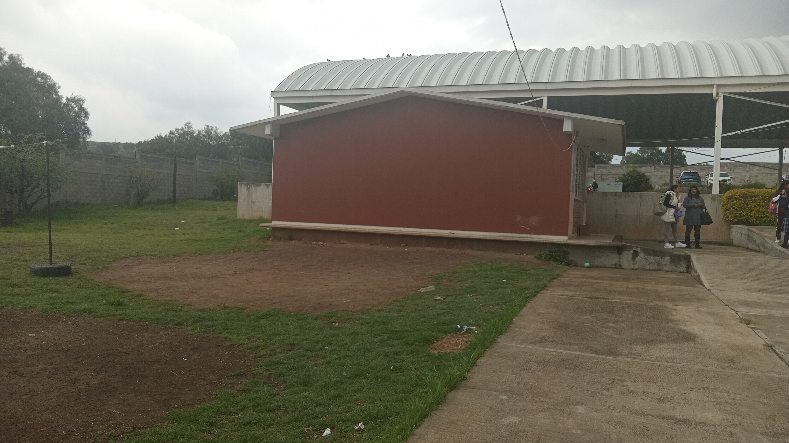
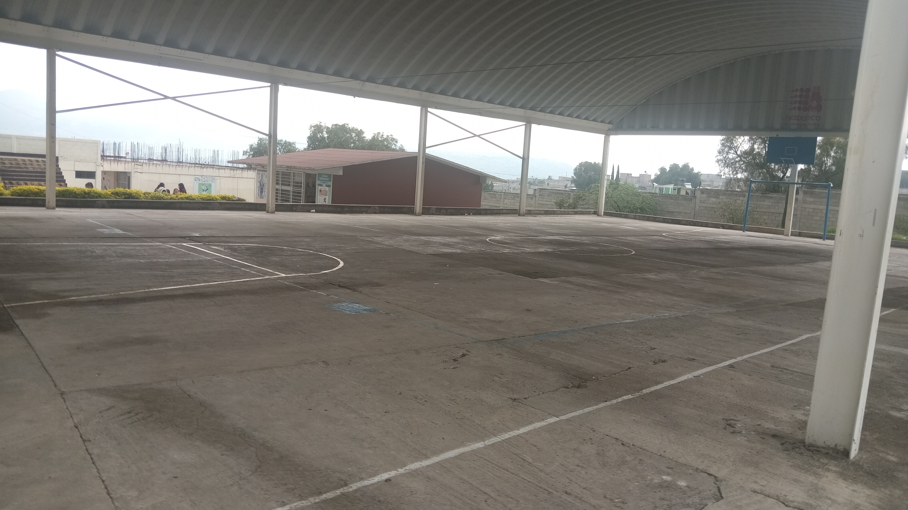
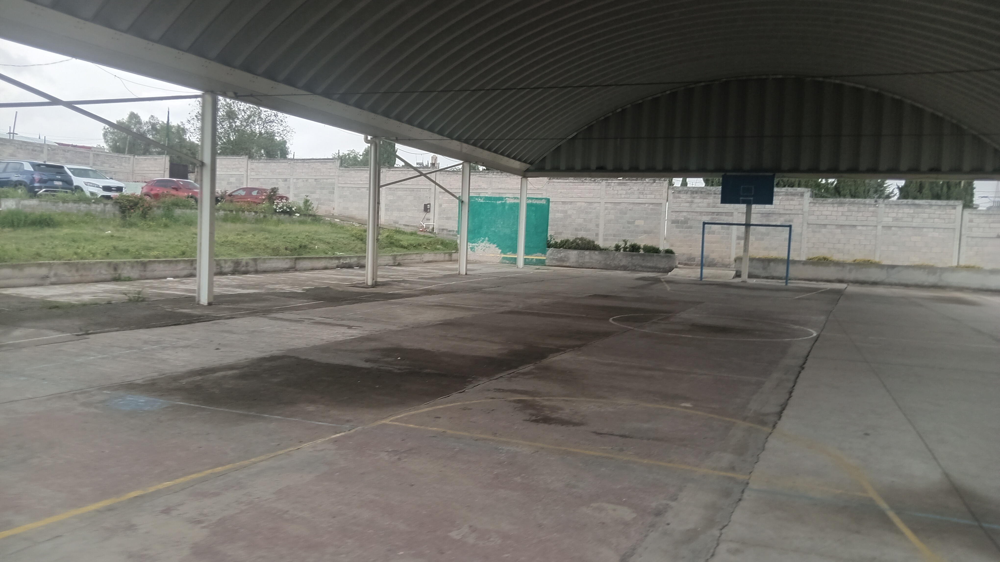
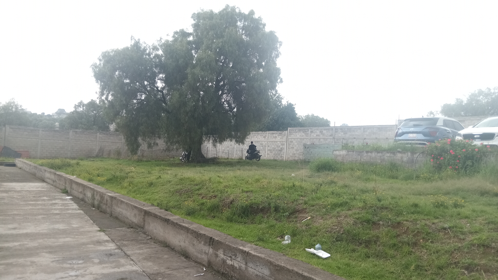
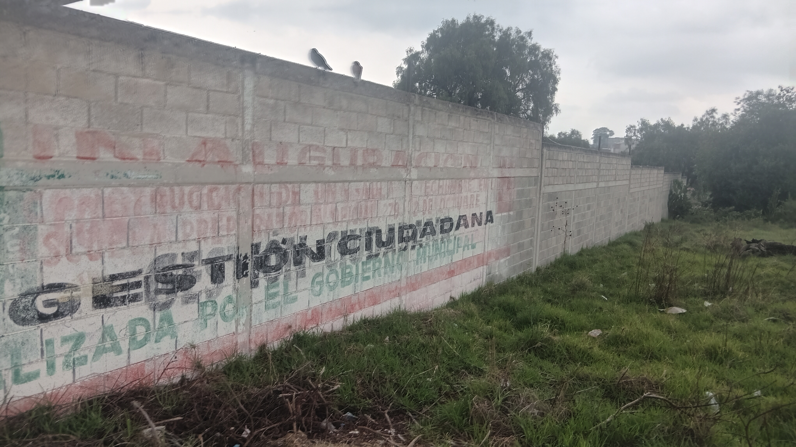

Foto de los Salones y la cancha
Aqui se encuentra una chancha de pasto que tiene dos porterias, casi siempre habra alumnos jugando aqui

Entrando a la escuela, en la izquierda se podra encontrar la cooperativa, donde antes se podian encontrar productos como los que se podrian encontrar en las tiendas de abarrotes, pero esto dejo de venderse y se retiraron productos con sellos, y tambien se cambiaron a los que se ocupaban de atender y hacer la comida, y ahora ya no se encuentran productos con sellos.

En esta imágen podemos apreciar una parte de los salones de clases de la esuela y tambien por supuesto el baño, como se menciono este complejo cuenta con varios salones en los que se dan las clases.
Aqui se encuentra una chancha de pasto que tiene dos porterias, casi siempre habra alumnos jugando aqui

este es la construccion donde esta tanto la sala de maestros y las salas del director y subdirector y tambien la de la secretaria.


estas son fotografias de la cancha de la escuela, aqui es donde se hacen casi todos los eventos ya sean deportivos o de dias tales como el dia de la madre, el dia de los muertos entre otros.

esta es una de las cosas que mas disfruto de la escuela, la unica de hecho

Esto es gracias a los alumnos y profesores.

Esta es la barda que sirve de perimetro para la escuela.